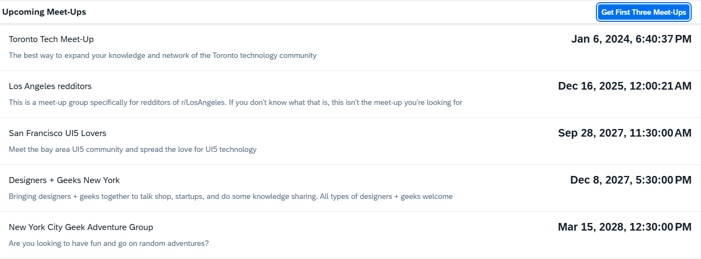

You can view and download all files in the Demo Kit at Mock Server - Step 2.
<!DOCTYPE HTML>
<html>
<head>
<meta charset="utf-8">
<meta name="viewport" content="width=device-width, initial-scale=1.0">
<title>Mock Server Tutorial</title>
<script id="sap-ui-bootstrap"
src="resources/sap-ui-core.js"
data-sap-ui-resource-roots='{
"sap.ui.demo.MockServer": "../"
}'
data-sap-ui-on-init="module:sap/ui/demo/MockServer/test/initMockServer"
data-sap-ui-compat-version="edge"
data-sap-ui-async="true">
</script>
</head>
<body class="sapUiBody">
<div data-sap-ui-component data-name="sap.ui.demo.MockServer" data-id="container" data-settings='{"id" : "MockServer"}'></div>
</body>
</html>
We use the webapp/test/mockServer.html file to run our app in test mode with mock data.
We have modified the data-sap-ui-on-init attribute in the bootstrap script of our
webapp/test/mockServer.html file. Previously, it was set to
"module:sap/ui/core/ComponentSupport", which directly handled the initialization of our application component.
Now, we have changed it to point to our new initMockServer module.
A productive application does not contain the mock server code and thus connects to the real service instead. The HTML page above is defined only for local testing and to be called in automated tests. The application coding itself is unchanged and does not know the difference between the real and the mocked back-end service.
The mock server does not need to be called from anywhere else in our code so we use sap.ui.require to load
dependencies asynchronously without defining a global namespace.
sap.ui.define([
"sap/ui/demo/MockServer/localService/mockserver"
], (mockserver) => {
"use strict";
// initialize the mock server
mockserver.init();
// initialize the embedded component on the HTML page
sap.ui.require(["sap/ui/core/ComponentSupport"]);
});This file sets up our test environment with mock data. It loads and initializes the mock server from
webapp/localService/mockserver.js before loading the sap/ui/core/ComponentSupport module. This
ensures the mock server is ready to intercept OData requests before the application component is instantiated. By handling both mock
server setup and component initialization, this file replaces the direct component initialization previously done by the
ComponentSupport module in the HTML file.
<?xml version="1.0" encoding="utf-8" standalone="yes"?>
<edmx:Edmx Version="1.0"
xmlns:edmx="http://schemas.microsoft.com/ado/2007/06/edmx">
<edmx:DataServices
xmlns:m="http://schemas.microsoft.com/ado/2007/08/dataservices/metadata" m:DataServiceVersion="1.0">
<Schema Namespace="Meetup.Models"
xmlns:d="http://schemas.microsoft.com/ado/2007/08/dataservices"
xmlns:m="http://schemas.microsoft.com/ado/2007/08/dataservices/metadata"
xmlns="http://schemas.microsoft.com/ado/2006/04/edm">
<EntityType Name="Meetup">
<Key>
<PropertyRef Name="MeetupID" />
</Key>
<Property Name="MeetupID" Type="Edm.Int32" Nullable="false" />
<Property Name="Title" Type="Edm.String" Nullable="true" />
<Property Name="EventDate" Type="Edm.DateTime" Nullable="false" />
<Property Name="Description" Type="Edm.String" Nullable="true" />
<Property Name="HostedBy" Type="Edm.String" Nullable="true" />
<Property Name="ContactPhone" Type="Edm.String" Nullable="true" />
<Property Name="Address" Type="Edm.String" Nullable="true" />
<Property Name="Country" Type="Edm.String" Nullable="true" />
<Property Name="Latitude" Type="Edm.Double" Nullable="false" />
<Property Name="Longitude" Type="Edm.Double" Nullable="false" />
<Property Name="HostedById" Type="Edm.String" Nullable="true" />
<Property Name="Location" Type="Meetup.Models.LocationDetail" Nullable="false" />
</EntityType>
<ComplexType Name="LocationDetail" />
<EntityContainer Name="Meetups" m:IsDefaultEntityContainer="true">
<EntitySet Name="Meetups" EntityType="Meetup.Models.Meetup" />
<FunctionImport Name="FindUpcomingMeetups" EntitySet="Meetups" ReturnType="Collection(Meetup.Models.Meetup)" m:HttpMethod="GET" />
</EntityContainer>
</Schema>
</edmx:DataServices>
</edmx:Edmx>The metadata file contains information about the service
interface and does not need to be written manually. It defines a
Meetup entity, a Meetups entity set and a
function import definition.
[{
"MeetupID": 1,
"Title": "Toronto Tech Meetup",
"EventDate": "/Date(1704562837000)/",
"Description": "The best way to expand your knowledge and network of the Toronto technology community"
}, {
"MeetupID": 2,
"Title": "Los Angeles redditors",
"EventDate": "/Date(1765839621000)/",
"Description": "This is a meetup group specifically for redditors of r/LosAngeles. If you don't know what that is, this isn't the meetup you're looking for"
}, {
"MeetupID": 3,
"Title": "San Francisco UI5 Lovers",
"EventDate": "/Date(1822123800000)/",
"Description": "Meet the Bay Area UI5 community and spread the love for UI5 technology"
}, {
"MeetupID": 4,
"Title": "Designers + Geeks New York",
"EventDate": "/Date(1828283400000)/",
"Description": "Bringing designers + geeks together to talk shop, startups, and do some knowledge sharing. All types of designers + geeks welcome"
}, {
"MeetupID": 5,
"Title": "New York City Geek Adventure Group",
"EventDate": "/Date(1836732600000)/",
"Description": "Are you looking to have fun and go on random adventures?"
}]
The Meetups.json file is automatically read by the mock server
later in this step. It represents a flat array of Meetup items.
sap.ui.define([
"sap/ui/core/util/MockServer",
"sap/base/Log"
], (MockServer, Log) => {
"use strict";
return {
/**
* Initializes the mock server.
* You can configure the delay with the URL parameter "serverDelay".
* The local mock data in this folder is returned instead of the real data for testing.
* @public
*/
init() {
// create
const oMockServer = new MockServer({rootUri: "/"});
// simulate against the metadata and mock data
oMockServer.simulate("../localService/metadata.xml", {
sMockdataBaseUrl: "../localService/mockdata",
bGenerateMissingMockData: true
});
// start
oMockServer.start();
Log.info("Running the app with mock data");
}
};
});Now we can write the code to initialize the OData V2 mock server that will simulate the requests instead of the real
server. We load the MockServer module as a dependency and create a helper object that defines an
init method to start the server. This method is called before the Component initialization in the
mockServer.html file above. The init method creates a MockServer instance
with the same URL as the real service. The URL in configuration parameter rootURI is now served by our test server
instead of the real service.
To simulate a back-end service, we still need to call the simulate method on the
MockServer instance with the path to our metadata.xml file. This sets up the URL patterns
that will mimic the real service. The first parameter is the path to the service metadata.xml document. The
second parameter is an object with the following properties:
sMockdataBaseUrl: path where to look for mock data files in JSON format
bGenerateMissingMockData: Boolean property to tell the MockServer to use auto-generated
mock data in case no JSON files are found.
start on the mock server instance. From this point on, each request matching the URL
pattern rootURI will be processed by the MockServer.Finally, we add a message toast to indicate for the user that the app runs with mock data.
This approach is perfect for local and automated testing, even without any network connection. Your development does not depend on the availability of a remote server, i.e. to run your tests independently from the back-end service. You can control the mocked data so the requests will return reliable and predictable results.
If the real service connection cannot be established, you can always fall back to the local test page and run the app with mock data.
Just run the app now again with themockServer.html file. The list should now be populated with meetups from our mock
data. You can also choose the button and see data.